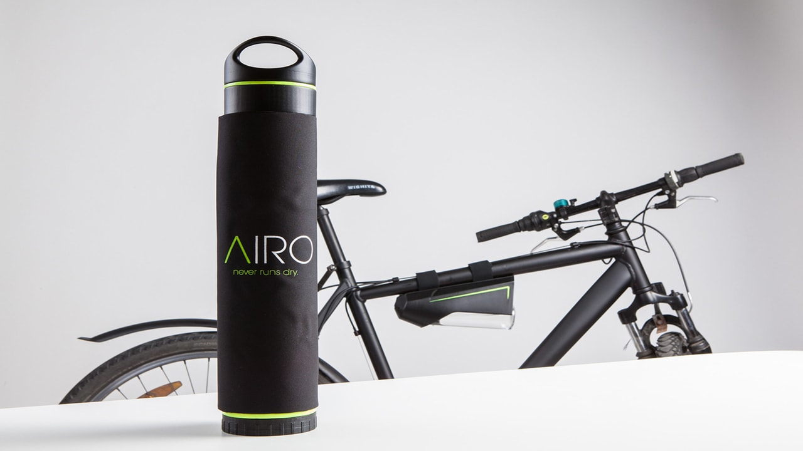

Water indeed is the most precious natural resource in Earth. Nobody can even think of a day living without water. But still in many places there is a lot of water scarcity. Some places like Sudan, Venezuela, Cuba and many villages in India face water scarcity and sometimes they do not even get proper and clean water to drink. In fact, 70% of the Earth is filled with water but only 2.5% is pure water which is suitable to drink. FONTUS is a bottle which can make water from air. FONTUS can be used by travelers and trekkers. Let us know more about it.
FONTUS is a self-filling water bottle which makes water out of air. We all know that air is a mixture and it has water vapour in it. Water vapour when cooled or condensed forms water. This principle is used in FONTUS. The FONTUS has a solar panel which absorbs the energy from the sun. The solar energy makes a fan on the top rotate which intakes air. Then the air is cooled or condensed. The water vapour condenses on cooling and forms water. This water gets stored in the bottle which is suitable to drink.
FONTUS is available in 2 categories AIRO and RYDE.
FONTUS AIRO is used by travelers and trekkers. It has a comparatively large solar panel which can be detached. It usually makes water when it is stationary.
FONTUS RYDE is used by bicycle travelers. It has small solar panel which covers the bottle. It can be detached or attached to the bicycle anytime. When the bicycle moves it creates air resistance. These air streams get inside the bottle and form water.
FONTUS has won several design awards, like the International Design Award where it got gold and silver in different categories and was also a finalist in James Dyson Award. These awards state that it was a unique invention.
Instead of getting design rewards it had some flaws. It could not purify the air completely and thus the water remained unfit to drink. The FONTUS could not purify air which had small microbes or bacteria if they were small. The company also faced bankruptcy.
You all can visit the official website of FONTUS to know more and get official review.